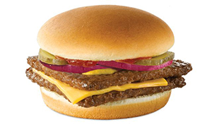

I AM HUNGRY
I want dinner
Maybe I should go to Wendy's
- Frosty
- Fries
- Jr. Bacon Cheeseburger
- Nuggets

A healthier alternative to Wendy's is to cook my own burgers
Recipe: Turkey Burgers
Ingredients
- 3 pounds ground turkey
- 1/4 seasoned bread crumbs
- 1/4 cup finely diced onion
- 1 clove garlic, peeled and minced
- 1 teaspoon salt
- 1/4 ground black pepper
- 2 egg whites, lightly beaten
Directions
- In a large bowl, mix ground turkey, seasoned bread crumbs, onion, egg whites, parsley, garlic, salt and pepper
- Form into 12 patties
- Cook the patties in a medium skillet over medium heat, turning once, to an internal temperature of 180 degrees F